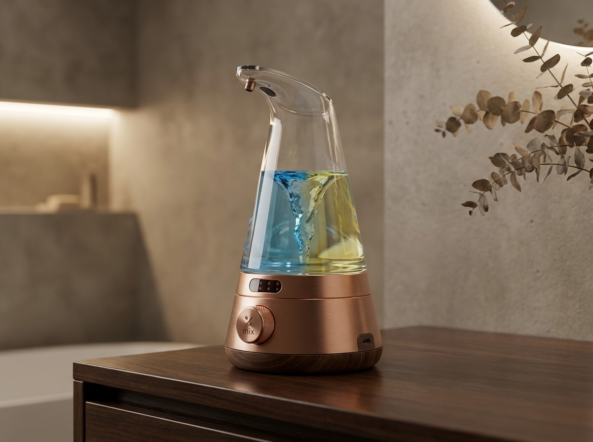

El sistema que elimina la botella de jabón para siempre.
AURA™ combina sachets concentrados en PVA con un dispenser diseñado para el hogar que disuelve, mezcla y dispensa jabón premium de forma automática. Cero plástico, cero esfuerzo, máxima experiencia.

Propuesta de valor en una frase
“Deja caer un sachet. El dispenser hace el resto: disuelve, mezcla y entrega jabón de manos premium en segundos. Sin plástico, sin desorden, sin fricción.”
Cómo funciona

1. El sachet AURA Mix™
Un sachet de PVA biodegradable encapsula jabón concentrado. El usuario solo lo deja caer dentro del dispenser, sin medir, sin verter, sin ensuciar.

2. Cámara de disolución
El dispenser activa la disolución del PVA con agua y dirige la mezcla hacia la cámara interna, donde se alcanza la concentración óptima.

3. Mezcla automática
Un mecanismo interno asegura que cada ciclo produzca la misma concentración de jabón, eliminando la variabilidad del usuario.
4. Dispensado
El usuario recibe jabón listo para usar, en formato líquido o espuma, mediante sensor o pulsador, según la versión del dispositivo.
Impacto ESG
Ambiental
- Elimina entre 50 y 100 botellas plásticas por hogar al año.
- Reduce más del 90% del peso y volumen de transporte frente a jabón líquido tradicional.
- Uso de PVA biodegradable, ya validado en aplicaciones masivas como detergentes en pods.
Social
- Integra la sostenibilidad en un hábito diario: lavarse las manos.
- Educa a familias y niños sobre consumo responsable y circularidad.
- Producto que genera conversación y refuerza identidad eco-premium.
Gobernanza
- Proyecto gestionado bajo estándares PMI/PMBOK.
- Gate reviews formales antes de cada fase de inversión.
- Documentación de riesgos, supuestos y validaciones de mercado.
Propiedad Intelectual
AURA™ se apoya en una combinación de tecnologías probadas (PVA, dispensers automáticos, concentrados) integradas en un sistema único para el hogar.
Activos IP previstos
- Diseño del mecanismo de disolución y mezcla automática.
- Formato propietario de sachet AURA Mix™.
- Arquitectura de ecosistema cerrado (dispenser + sachet + suscripción).
- Diseño industrial del dispenser para uso residencial premium.
La innovación clave no es una sola tecnología nueva, sino la integración de tecnologías maduras en un sistema unificado y defendible.
Fase 0 – Statement of Value
La Fase 0 establece por qué AURA™ debe existir antes de entrar en desarrollo completo: valida el problema, el mercado, la solución y la alineación estratégica con VERSUS™ y MacDave Inc.
- Validación de que no existe un producto equivalente a nivel global.
- Definición de segmentos objetivo y Jobs-to-Be-Done.
- Evaluación preliminar de factibilidad técnica, de mercado, financiera y legal.
- Recomendación Go / No-Go para avanzar a Business Case y prototipado.
Mercado & Potencial Comercial
AURA™ se dirige a hogares premium que valoran sostenibilidad, diseño y conveniencia. El foco inicial está en Canadá y Norteamérica, con expansión posterior.
Segmentos clave
- Eco-Conscious Premium Homeowners: 4–6 millones de hogares en Canadá y ~30 millones en Norteamérica.
- Design-Forward Homeowners: consumidores que pagan 2–3x por diseño superior.
- Convenience-Driven Subscribers: hogares que prefieren “set it and forget it”.
Contexto de mercado
- Mercado de tabletas refill: ~$1.24B, con crecimiento anual cercano al 9%.
- Mercado de dispensadores: ~$3B, con fuerte demanda en diseño premium.
- Mercado de personal care sostenible: >$50B, en expansión acelerada.
Proyección Financiera (1–3 años)
Las proyecciones se basan en penetración conservadora sobre el mercado objetivo y en un modelo de ingresos mixto: hardware + suscripción de sachets.
| Año | Penetración estimada | Hogares | Ingresos estimados |
|---|---|---|---|
| 1 | 0.05% del mercado objetivo | ~18,000 hogares | $1.8M – $3.2M |
| 2 | 0.15% del mercado objetivo | ~54,000 hogares | $5.4M – $9.6M |
| 3 | 0.30% del mercado objetivo | ~108,000 hogares | $10.8M – $19.2M |
El modelo de suscripción permite que el peso de los ingresos se desplace progresivamente hacia refills recurrentes con márgenes altos.
Retorno de la Inversión (ROI)
AURA™ combina un ticket inicial de hardware con ingresos recurrentes de sachets, lo que acelera la recuperación de la inversión en adquisición de clientes y desarrollo.
Drivers de ROI
- Ingresos recurrentes: 60–70% del total proviene de refills.
- Márgenes altos por concentrados y logística optimizada.
- Lock-in del ecosistema: el dispenser ancla el uso de sachets AURA Mix™.
Métricas objetivo
- CAC objetivo: $12–$18.
- LTV estimado: $90–$120 por cliente.
- Recuperación de CAC: < 2 meses en clientes suscritos.
Comparativa & Competidores
AURA™ ocupa un espacio de “only-ness”: ningún competidor integra sachet PVA + disolución automática + diseño residencial premium en un solo sistema.
| Alternativa | Qué ofrece | Qué le falta |
|---|---|---|
| Blueland / Myni | Tabletas refill para botellas reutilizables | Sin dispenser dedicado; disolución manual; espera de 15–30 minutos |
| Simplehuman / Kohler | Dispensers de diseño para el hogar | Sin innovación en refills; siguen usando jabón líquido tradicional |
| PURELL / GOJO | Sistemas cerrados para entornos comerciales | No son residenciales; no usan PVA; sin narrativa de sostenibilidad |
| DIY / bulk refill | Jabón a granel y recarga manual | Desorden, inconsistencia, sin diseño ni ecosistema de marca |
“AURA™ es el único sistema que combina sostenibilidad, diseño premium y automatización en un ecosistema cerrado para el hogar.”
Investor Pitch
VERSUS™ + AURA™ representan una plataforma para construir una nueva categoría: higiene premium, sostenible y suscrita, empezando por el lavado de manos.
La tesis de inversión
- White-space validado: no existe un sistema equivalente a nivel global.
- Convergencia de tres megatendencias: packaging sostenible, refill en el hogar, hardware inteligente.
- Modelo de ingresos recurrentes con márgenes altos y lock-in de ecosistema.
Uso estratégico de capital
- Desarrollo y validación del dispenser (ingeniería + prototipos).
- Formulación y escalado de sachets AURA Mix™.
- Lanzamiento DTC y marketing digital full-funnel.
AURA™ es el flagship que demuestra el poder de VERSUS™ como master brand de productos premium y sostenibles.
Roadmap 2026–2029
2026 – Validación & Fundamentos
- Completar validación de mercado y gap competitivo.
- Prototipo funcional del dispenser y pruebas de disolución PVA.
- Definición y registro de VERSUS™ y AURA™ como marcas.
2027 – Lanzamiento Comercial
- Producción inicial del dispenser AURA™.
- Lanzamiento DTC en Canadá.
- Activación de estrategia digital (Instagram, TikTok, influencers).
- Inicio de suscripción AURA Mix™.
2028 – Escalamiento & Expansión
- Entrada a mercados clave en EE.UU.
- Retail selectivo en tiendas de diseño y sostenibilidad.
- Versión 2.0 del dispenser (opciones IoT).
2029 – Ecosistema VERSUS™
- Extensión a nuevas líneas: Versus Clean™, Versus Body™, Versus Home™.
- Optimización de costos y escalado internacional.
Sostenibilidad & Impacto
AURA™ convierte la sostenibilidad en un hábito invisible pero poderoso: cada lavado de manos evita plástico, transporte innecesario y residuos.
Impacto cuantitativo
- 50–100 botellas plásticas menos por hogar al año.
- Reducción de >90% en peso y volumen de envíos.
- Contribución directa a objetivos de reducción de residuos plásticos.
Impacto cualitativo
- Refuerza la identidad de hogares eco-premium.
- Integra la sostenibilidad en el diseño, no como sacrificio.
- Genera orgullo y conversación en el entorno social del usuario.
Tecnología del Dispensador
El dispenser AURA™ está diseñado específicamente para el hogar, no adaptado desde entornos comerciales. Su tecnología se centra en la experiencia y la consistencia.
Componentes clave
- Cámara de disolución dedicada para sachets PVA.
- Mecanismo de mezcla que asegura concentración constante.
- Opciones de activación: sensor o pulsador.
- Diseño industrial premium: acero cepillado, cerámica o acabado mate.
Ventajas técnicas
- Elimina errores de usuario en dilución.
- Refill en menos de 5 segundos.
- Arquitectura preparada para futuras integraciones IoT.
Equipo & Gobierno del Proyecto
AURA™ es desarrollado bajo MacDave Inc. y la master brand VERSUS™, con un enfoque de gobernanza profesional y visión de plataforma.
Estructura de gobierno
- MacDave Inc.: entidad corporativa, IP, estrategia y financiamiento.
- VERSUS™: arquitectura de marca, narrativa y expansión de portafolio.
- PMO: gestión de roadmap, riesgos y decisiones de inversión.
Funciones clave
- Ingeniería: diseño y validación del dispenser.
- Producto: definición de experiencia AURA™ y ecosistema.
- Marketing: adquisición, contenido y posicionamiento digital.
- Operaciones: producción, logística y calidad.
Preguntas Frecuentes (FAQ)
¿Qué es exactamente AURA™?
Es un sistema integrado de higiene para manos que combina un dispenser premium con sachets concentrados en PVA y un modelo de suscripción.
¿El PVA es seguro y biodegradable?
Sí. El PVA se usa ampliamente en productos como detergentes en pods y cuenta con validación ambiental y regulatoria en múltiples mercados.
¿Necesito suscripción para usar el sistema?
No es obligatorio, pero la suscripción AURA Mix™ optimiza costos, conveniencia y disponibilidad continua de refills.
¿Cuánto dura un sachet?
Cada sachet está diseñado para equivaler a una botella completa de jabón líquido premium, dependiendo del patrón de uso del hogar.
¿El dispenser es reparable o reemplazable?
El diseño contempla durabilidad y la posibilidad de reemplazo de componentes clave para extender su vida útil y reducir residuos.